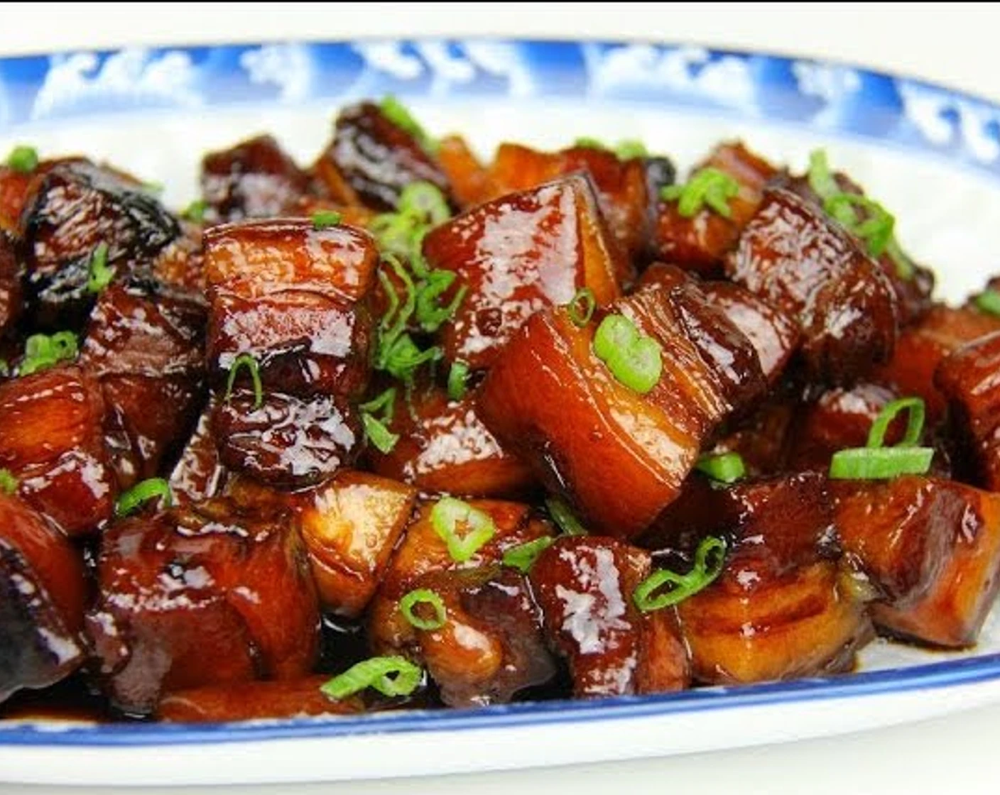

It has a perfectly balanced sweet and savory flavor. The texture of the slow-cooked pork is soft and could almost melt in your mouth. My mouth is literally watering as I am writing about this dish right now. --- Spice the Plate

Pork belly has a rich, savory flavor with a slightly sweet and slightly salty taste. It has a high-fat content, which gives it a rich, succulent flavor when it is cooked. --- Toast Tab
Because slow cooking allows the flavourful fat to render down, which over time, becomes absorbed into the meat leaving you with melt-in-your-mouth-tender meat. --- Swiss Farm
The dish has a melt-in-the-mouth texture that is formed as a result of a long braising process, during which the liquid reduces and becomes thick. --- Wikipedia
As a delicacy for all ages, Red Braised Pork is also rich in collagen and good for maintaining beauty, keeping young and improving the elasticity of skin. --- Yum Chinese Food
Pork belly is essentially “better bacon”. It has more meat, more healthy fat, and greater culinary complexity. --- Grassland Beef
Instructions
Cut the pork belly into 3/4 inch thick pieces.
Then bring a pot of water to a boil. Blanch the pork for a couple minutes. This gets rid of impurities and starts the cooking process. Take the pork out of the pot and set aside.
Over low heat, add oil and sugar to your wok. Melt the sugar slightly and add the pork. Raise the heat to medium and cook until the pork is lightly browned.
Turn the heat back down to low and add Shaoxing cooking wine, regular soy sauce, dark soy sauce, and water.
Cover and simmer over medium heat for about 45 minutes to 1 hour until pork is fork tender.

And then, it's time to eat!
Note: Leftovers are not recommended to be kept for more than 1 day. Keep them refridgerated and warm them before eating again.